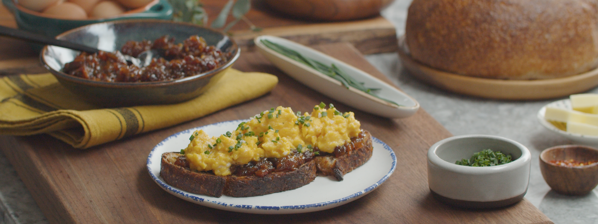

Gordon's Soft Scramble and Bacon Jam Toast

Enjoy Gordon's delicious ass scrambled eggs with bacon jam
I don't know how long it's gonna take to make this. The bacon jam
will probably take 2 hours+ since
you gotta slice n dice and cook. The eggs on the other hand, like 3-5 min. And just use whatever
toast you want. Lord knows it'll probably take me like 5 hours. GL HF!
THERE IS NO LAMB SAUCE IN THIS RECIPE.
Ingrediments
Bacon Jam
- 1 pound thick cut bacon, sliced into 1-cm pieces
- 1 small yellow onion, chopped
- 3 shallots
- 1/2 cup brown sugar
- 1/2 cup maple syrup
- 1/2 cup freshly brewed coffee
- 1/2 cup apple cider vinegar
- 1/4 - 1/2 teaspoon red pepper flakes
The Big G's Soft Scrambed Eggs
- 6 eggs, cold
- 1 tablespoon unsalted butter, cold
- Kosher salt
- Freshly ground black pepper (we gettin fancy)
- 1 teaspoon crème fraîche (oooo lala)
- Chives, thinly sliced
- Flaky salt, optional
Steps
- Add bacon to big skillet and cook at medium-high heat until bacon starts crispin. Remove bacon and set aside.
- Pour out bacon fat but save it, and leave some in the pan. Add shallots and onions and cook till they caramelize.
- Add all the fancy stuff + the bacon into the pan and let boil.
- Reduce heat, stir here and there until mixture is THICK n JAMMY.
- You can spread it on your toast already; otherwise let it cool for storage.
- EGGS! Crack 'em and add butter into a saucepan.
- Stir and don't whisk. After 30 sec, take pan off heat and keep stirring.
- Put pan back on heat after 10 sec. Repeat last step and this step for about 3 min.
- At the last minute, season them eggs and for EXTRA CREAMY TEXTURE, stir in that crème fraîche.
- Spoon over the bacon jam on toast and then GARNISH if you want.